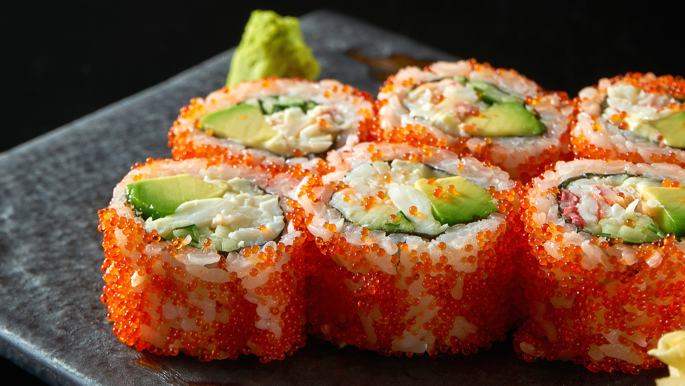

Sushi Details
Sushi is a traditional Japanese dish consisting of vinegared rice combined with various ingredients such as raw or cooked seafood, vegetables, and occasionally tropical fruits. It is often served with soy sauce, wasabi, and pickled ginger. There are many types of sushi, including nigiri (hand-pressed sushi), maki (rolled sushi), sashimi (sliced raw fish), and temaki (hand rolls). Sushi is known for its delicate flavors, beautiful presentation, and the artistry involved in its preparation.
